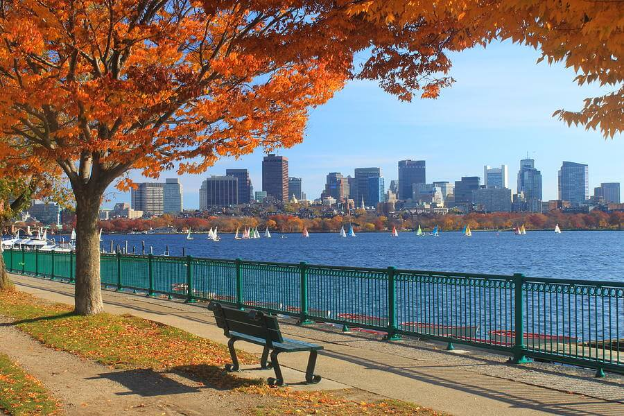
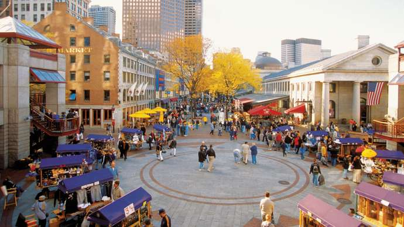
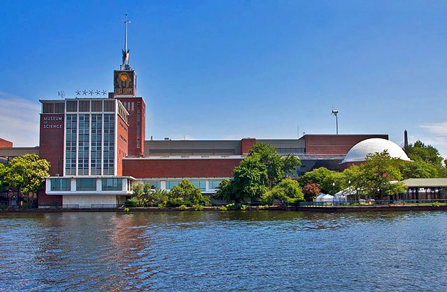
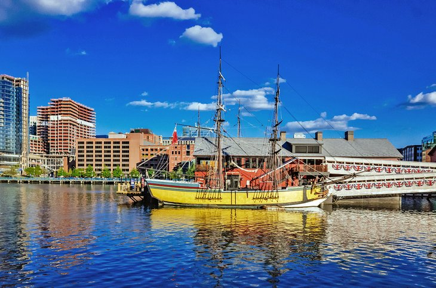

<!doctype html>
<html></html>
<head>
  <link rel="stylesheet" type="text/css" href="assets/css/wrong.css" />
  <link rel="preconnect" href="https://fonts.googleapis.com">
    <link rel="preconnect" href="https://fonts.gstatic.com" crossorigin>
    <link href="https://fonts.googleapis.com/css2?family=Sansita+Swashed:wght@500&display=swap" rel="stylesheet">
</head>
<body>

  <div><a href="index.html"><h3>Home</h3></a></div>

<div><h1>The Charles River</h1></div>

<p><h2>A beautiful place to ride your bike, run, walk, or rollerblade. It also passes by the Boston Pops!</h2></p>


<div><h1>Quincy Market</h1></div>

<p><h2>A lively marketplace in the heart of the city.  
<div> <a href="https://keithdalyphoto.blogspot.com/2010/08/haymarket-boston-ma.html">Also see: Hay Market </a> </h2></div> </p>


<div><h1>Boston Museum of Science</h1></div>

<p><h2>The museum that inspired me when I was a kid. Truly recommend!</h2></p>

<div><h1>Boston Tea Party</h1></div>

<p> <h2>A historic ship symbolic of the Revolutionary War.</h2></p>


<script src="assets/pop.js"></script>

</html>